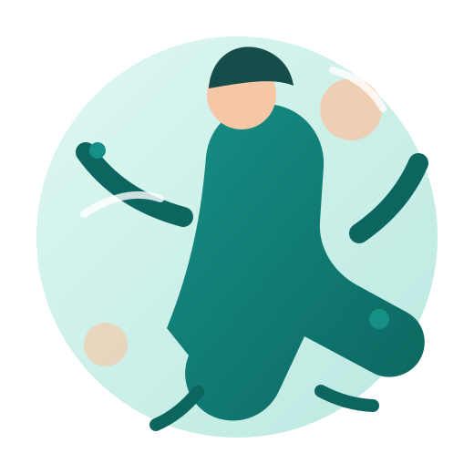

Fizyoterapi
Fizyoterapi mezunu olarak hareket, denge ve fonksiyonel yaşam odaklı yaklaşım.
01Sağlık & hareket
Fizyoterapi ve hemşirelik mezuniyetimle sağlıklı, güçlü ve hareketli bir yaşam için çalışıyor; bilgilerimi her gün geliştiriyorum.

İlgi alanlarım
Hemşirelik mezuniyetimin kazandırdığı sağlık bilgisi ile fizyoterapi eğitimimi bir araya getiriyorum.
Fizyoterapi mezunu olarak hareket, denge ve fonksiyonel yaşam odaklı yaklaşım.
01Hemşirelik mezunu olarak sağlık, bakım ve insan odaklı yaklaşımın güçlü temelleri.
02Günlük yaşamda hareketi ve iyi hissetmeyi destekleyen alışkanlıklar.
03Hakkımda
Hemşirelik ve fizyoterapi bölümlerinden mezun oldum. İki alandaki bilgi ve deneyimimi, insanların daha sağlıklı ve hareketli bir yaşam sürmesine katkı sunma isteğiyle birleştiriyorum.
Beni takip edin